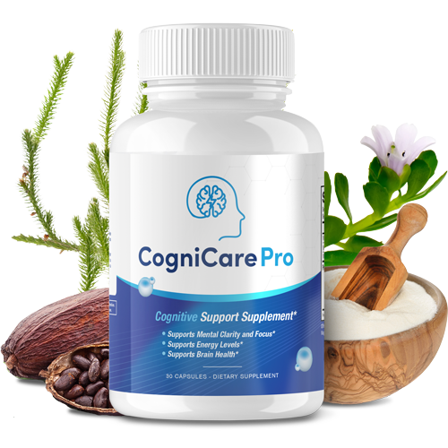

Independent Buyer's Guide · Updated May 13, 2026
CogniCare Pro Review: A Natural Brain Fog & Memory Support Option for Adults
A factual breakdown of CogniCare Pro — a daily formula aimed at adults dealing with brain fog, slow recall, and afternoon focus dips. Six plant-based and amino acid ingredients explained in plain English.

See Today's Price on the Official Store →Goes to the official CogniCare Pro page · Affiliate link
Why People Search for a Brain Fog Supplement Like CogniCare Pro
If you've found yourself walking into a room and forgetting why, struggling to recall a familiar name, or feeling mentally drained by mid-afternoon — you're not alone. Brain fog is one of the most common cognitive complaints among adults over 40, and interest in natural support options has grown significantly in recent years.
This is the context in which products like CogniCare Pro have gained attention: a once-a-day, caffeine-free formula positioned as a natural option for adults who want to support memory, focus, and overall cognitive wellness as part of a healthy lifestyle.
CogniCare Pro at a Glance
What Is CogniCare Pro?
CogniCare Pro is a natural daily supplement formulated for adults seeking cognitive wellness support. The formula combines time-tested botanicals such as Bacopa Monnieri, Rhodiola Root, and Huperzia Serrata with the amino acid L-Tyrosine and the plant compound Theobromine. It is sold exclusively through the manufacturer's official website and contains no caffeine or synthetic stimulants.
Each ingredient is included for its individual role in traditional wellness practices and modern nutritional science — the formula is not intended to diagnose, treat, cure, or prevent any disease.
Is CogniCare Pro Legit or a Scam?
It's a fair question. When you find a supplement marketed online with a familiar formula and a discount banner, healthy skepticism is the right starting point. Here is what we can verify from publicly available information:
- Manufacturing standard. The label indicates the product is manufactured in the United States in a facility that follows Good Manufacturing Practice (GMP) guidelines — a documented quality-control standard for dietary supplements.
- Authorized retailer. Checkout, payment, and customer service are handled by Digistore24, an established online retailer used by thousands of digital products.
- Money-back guarantee. The product carries a 90-day money-back guarantee, processed through the same retailer. This gives buyers a window to evaluate without long-term financial risk.
- Ingredient transparency. The supplement facts panel discloses 11 ingredients, including the six headline botanicals and amino acids. Nothing is hidden behind a "proprietary blend" label.
- FDA disclaimer. Like every dietary supplement in the United States, CogniCare Pro is not evaluated by the FDA for treatment of any disease. The product is sold as a wellness supplement, not a medication.
None of these checks guarantee that the product will work for any specific person — supplements are individual. But the operational checks place CogniCare Pro in the category of legitimate consumer products sold through standard retail channels, not the category of scam.
The 6 Headline Ingredients
Below is a plain-English breakdown of each ingredient and what it is. Always review the product label and consult your healthcare provider for personal guidance.
-
Bacopa Monnieri
A perennial herb traditionally used in Ayurvedic wellness practice. Modern research has examined its bacosides and their relationship to cognitive function in healthy adults.[1]
-
L-Tyrosine
A naturally occurring amino acid the body uses in the synthesis of certain neurotransmitters such as dopamine. It is found in dietary sources including poultry, dairy, and seeds.
-
Theobromine
A plant alkaloid found in cocoa and tea leaves. Unlike caffeine, theobromine has a milder profile and has been studied for its relationship to attention and mood.
-
Rhodiola Rosea Root
An adaptogenic herb traditionally used in Scandinavia and Russia. It has been examined in small clinical studies for its relationship to mental performance under stress.[2]
-
Huperzia Serrata
A Chinese club moss containing huperzine A, a botanical compound that has been studied in the context of cognitive wellness in older adults.
-
Supporting Blend (5 additional ingredients)
The full label lists 11 ingredients in total, including a supporting matrix of nutrients and excipients selected for product stability and absorption.
View pricing, current offers, and the full label on the official page:
Check Current Pricing & Availability →✓ 90-Day Money-Back Guarantee · ✓ Free Shipping (qualifying orders)
Who Is CogniCare Pro Designed For?
The formula is positioned for adults seeking a daily, natural option to support cognitive wellness as part of a broader healthy lifestyle. Like all dietary supplements, it is not a substitute for a balanced diet, regular physical activity, quality sleep, and ongoing care from a licensed healthcare provider.
People who are pregnant, nursing, taking prescription medication, or who have a known medical condition should consult their healthcare provider before starting CogniCare Pro or any new supplement.
How We Evaluated CogniCare Pro
This review follows the same criteria we apply to every cognitive wellness supplement on Checked Picks. We do not run our own clinical trials. Instead, we:
- Verify the manufacturer's published claims against the supplement facts panel and the official ordering page.
- Cross-reference each ingredient with publicly available research in indexed journals (we link to the sources we used in the References section).
- Confirm operational details: manufacturing location, retailer, guarantee terms, refund process, and shipping policy.
- Flag any claim that is not supported by the label, the retailer, or the cited research. This page contains no statement about treatment or cure of any disease.
We may receive a commission for purchases made through outbound links on this page — see our disclaimer for the full disclosure.
How CogniCare Pro Compares to Other Brain Wellness Options
For shoppers researching cognitive wellness supplements, the table below highlights how CogniCare Pro sits alongside three well-known options in the same category. All four are sold direct-to-consumer in the United States and follow GMP manufacturing standards. Always verify current ingredients and pricing on each product's official page.
| Criterion | CogniCare Pro | Mind Lab Pro | Neuriva | Onnit Alpha Brain |
|---|---|---|---|---|
| Ingredient transparency | 11 disclosed | 11 disclosed | Disclosed | Proprietary blend |
| Caffeine-free | Yes | Yes | Yes | Yes |
| Capsules per day | 1 | 2–4 | 1 | 2 |
| Money-back guarantee | 90 days | 30 days | Varies by retailer | 90 days |
| Sold direct | Yes (official site) | Yes (official site) | Retail + online | Yes (official site) |
| Made in | USA · GMP | USA · GMP | USA | USA · GMP |
Comparison compiled from each product's official page and supplement facts panel as of May 2026. Subject to change.
What to Look For in a Cognitive Wellness Supplement
If you are evaluating natural brain wellness products, the following criteria are commonly recommended by registered dietitians and consumer health publications:
| Criterion | Why It Matters | CogniCare Pro |
|---|---|---|
| Transparent ingredient list | You should know exactly what is inside | 11 ingredients disclosed |
| Manufacturing standard | GMP indicates documented quality controls | GMP-certified, USA |
| Money-back guarantee | Allows risk-free evaluation | 90 days |
| No hidden stimulants | Caffeine can mask effects and disrupt sleep | Caffeine-free |
| Clear label dosing | One serving = one capsule, easy to track | 1 capsule per day |
Frequently Asked Questions
What is CogniCare Pro?
CogniCare Pro is a natural daily supplement designed to support cognitive wellness in adults. It combines six plant-based and amino acid ingredients including Bacopa Monnieri, L-Tyrosine, Theobromine, Rhodiola Root, and Huperzia Serrata. The formula contains no caffeine, no synthetic stimulants, and no prescription is required.
Is CogniCare Pro legit or a scam?
CogniCare Pro is a real product manufactured in the United States in a GMP-certified facility and fulfilled by Digistore24. It carries a 90-day money-back guarantee. As with any supplement, individual results vary — but the operational details place it among legitimate consumer products, not scams.
What ingredients are in CogniCare Pro?
The full label lists 11 ingredients. The six headline ingredients are Bacopa Monnieri, L-Tyrosine, Theobromine, Rhodiola Root, Huperzia Serrata, and a supporting nutrient blend. See the official page for the complete supplement facts panel.
How is CogniCare Pro taken?
The recommended use is one capsule per day with water. Always follow the directions on the product label and consult your healthcare provider before starting any supplement.
Is there a money-back guarantee?
Yes — CogniCare Pro is offered with a 90-day money-back guarantee. Refund requests are processed by Digistore24, the authorized retailer for the product.
Where is CogniCare Pro made?
CogniCare Pro is manufactured in the United States in a facility that follows Good Manufacturing Practice (GMP) standards.
How long does shipping take?
Standard shipping within the United States is typically 5 to 7 business days. International shipping times vary by destination.
Is CogniCare Pro safe?
CogniCare Pro is formulated with natural ingredients and contains no caffeine. As with any supplement, individual responses can vary. People who are pregnant, nursing, taking medication, or who have a medical condition should speak with their healthcare provider before use.
Ready to see the current pricing and offers?
View the Current Offer at the Official Store →About This Review
This is an independent buyer's guide published by Checked Picks, a reader-supported review site. We are not the manufacturer, retailer, or seller of CogniCare Pro. The information presented is based on the manufacturer's published claims, the supplement facts panel, and publicly available research about the listed ingredients. We may receive a commission for purchases made through links on this page, at no additional cost to you.
This page is intended for informational purposes only and does not constitute medical advice. For personal health decisions, consult a licensed healthcare provider.
References
- Calabrese C, Gregory WL, Leo M, Kraemer D, Bone K, Oken B. Effects of a standardized Bacopa monnieri extract on cognitive performance, anxiety, and depression in the elderly: a randomized, double-blind, placebo-controlled trial. Journal of Alternative and Complementary Medicine. 2008;14(6):707-713.
- Panossian A, Wikman G, Sarris J. Rosenroot (Rhodiola rosea): traditional use, chemical composition, pharmacology and clinical efficacy. Phytomedicine. 2010;17(7):481-493.
- Manap ASA, Vijayabalan S, Madhavan P, et al. Bacopa monnieri, a Neuroprotective Lead in Alzheimer Disease: A Review on Its Properties, Mechanisms of Action, and Preclinical and Clinical Studies. Drug Target Insights. 2019;13.